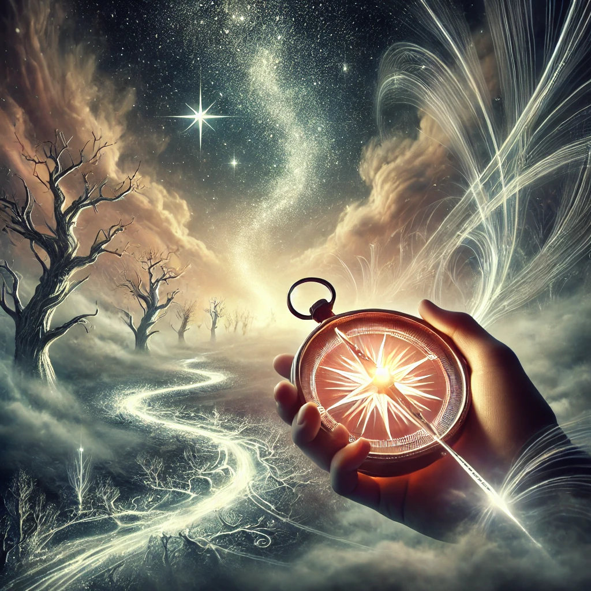

You take control of the compass, gripping it tightly as the glowing needle flickers. Instead of letting it pull you, you will it to bend to your desires. The surrounding mist begins to shift, revealing pathways that respond to your thoughts.
As you step forward, the landscape morphs with each decision you make. Forests of silver trees rise around you, rivers of glowing light carve new paths, and the sky shimmers with stars that seem to align with your every move. A voice, resonant and strong, echoes through the air:
“The path is yours to shape, but shaping it requires clarity of mind and heart. What will you create?”
Before you lies the power to forge your destiny, but each choice feels heavier, carrying with it the weight of its consequences. You take a deep breath, ready to decide what path to shape.

What will you create?